その内容（講演録）はこちら。
いつもは、まったく人の話を聞かず、勝手に盛り上がっている神田会ですが、今回は、全員が中山さんの話に聞き入り（とくに一夫多妻制と割礼について）、これまでで最高の出来の雑談との評価を得ました。
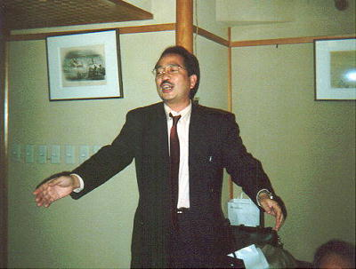
講師の中山さん(50卒)
いつもは、人の話を聞かずに、ちゃちゃだけいれる神田会ですが
今日は、中山さんの名講義に、みんな聞き入っていました。
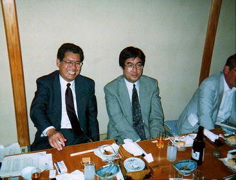
左、入江さん(42卒)、右、松浦さん(42卒)
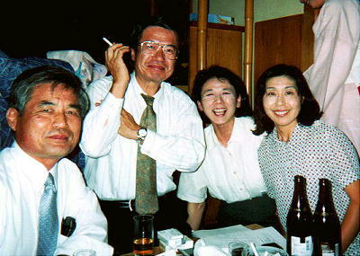
左から、喜岡さん(37卒)、堀本さん(47卒)
橋本(大西)さん(50卒)、小島さん(43卒)
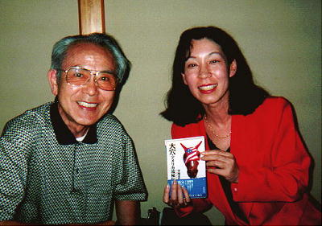
左、宮本さん(27卒)、右、中西(壇原)さん(47卒)
中西さんは、次女も特別参加
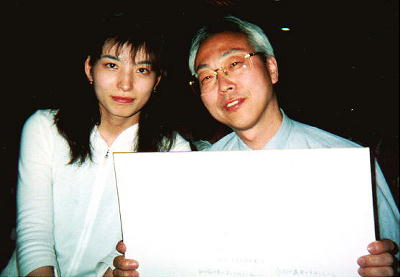
左、太田さん(H7卒)、右、土居さん(47卒)
手にしているのは、当日、みんなで書いた色紙です。
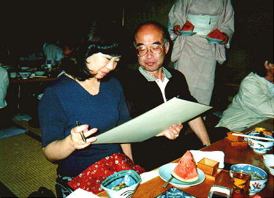
左、伊達さん(43卒)、右、久保(弟)さん(29卒)
久保さんは、自称「うどんおじさん」。
呼ばれれば、どこにでも出かけて
うどんを打ってくれるそうです。
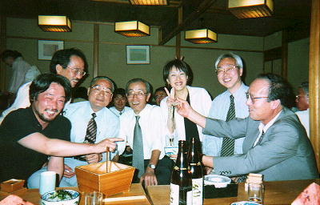
左から、小山さん(53卒)、中山さん(50卒)、三崎屋さん(34卒)
大西さん(33卒)、長尾さん(53卒)、土居さん(47卒)、岡崎さん(37卒)
三崎屋さんは、奥さん(邦子さん)ご同伴で参加。
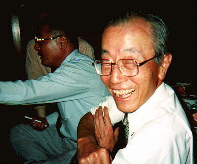
大西さん(33卒)
東京玉翠会の事務局長です。
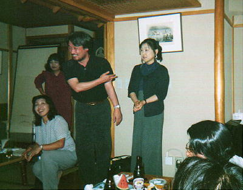
左、小山さん(53卒)、右、二見(内田)さん(53卒)
二見さんは、社会科の内田先生の娘さんです。
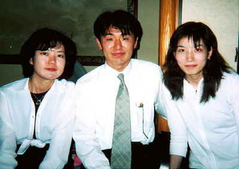
左から、中西さん、大橋さん(H7)、太田さん(H7)
中西さんは、47卒の中西さんの娘。
お母さんが、高高のことになると、いつもいそいそと出かけるので
どんな楽しいところかと思い参加したそうです（一部脚色あり）。
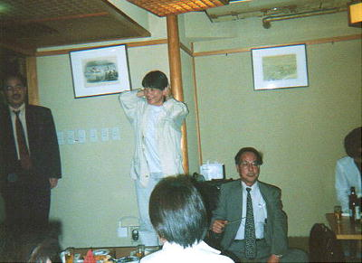
有馬さん(47卒)
有馬さんの両親は、小学校の先生。
今日の出席者にもその教え子が何人かおり、
「ええっー。有馬先生のむすめー。」
という声があちこちから出ていました。
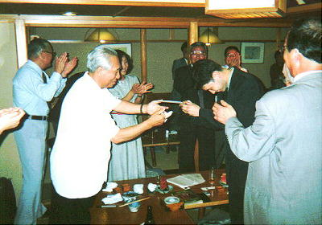
左は、中村さん(高中50回卒)、右は、馬場さん(H9卒)
馬場さんは、玉翠会のホームページをみて、ひとりで参加。
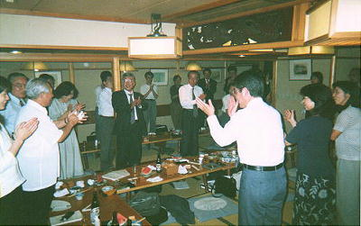
岩崎さん(49卒)の音頭で、中締め。
今回は、３４名が参加。若い世代の人が増えてきました。